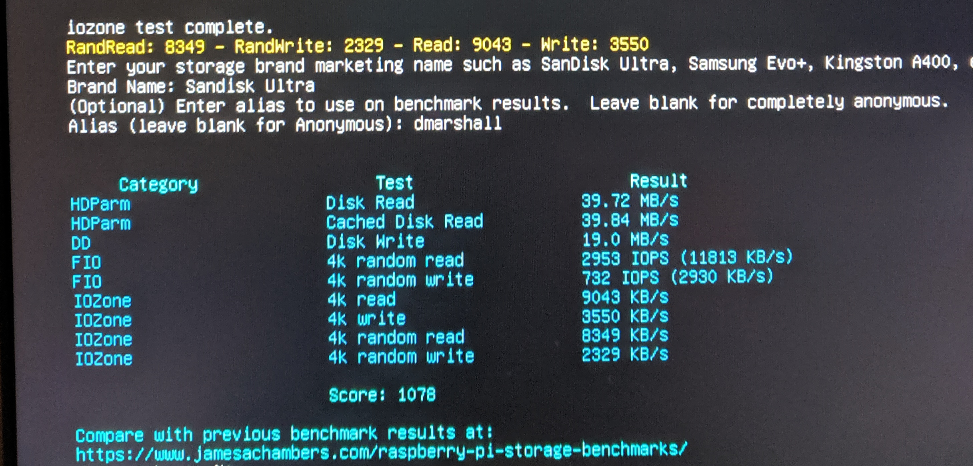
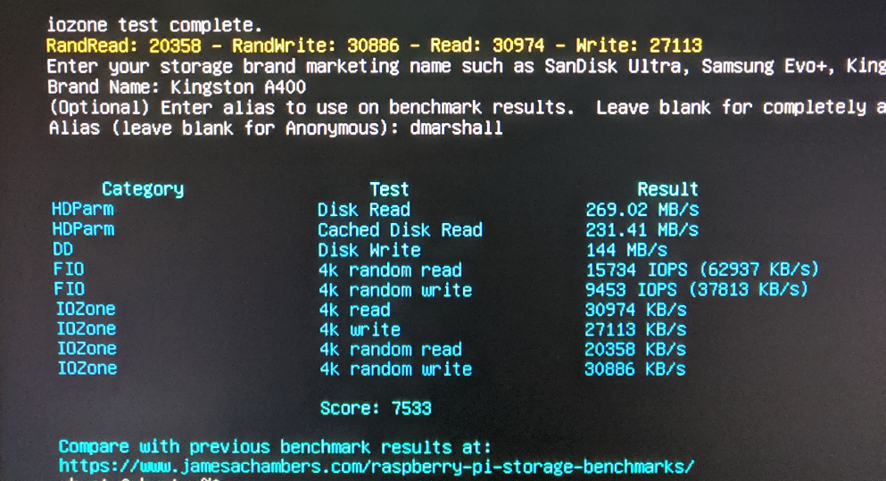
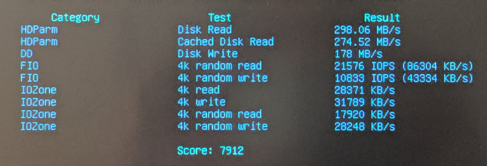

I/O Benchmarks
Credit for this benchmark goes to James Chambers and this excellent Pi-oriented benchmark script.
We benchmarked the combinations detailed below. Overall the recommendation is a Kingston A400 SSD with an inexpensive SATA-to-USB-A cable which offers the best overall price-performance. A solid I/O rig is available for around $40 per node.
Sandisk Ultra microSD 32GB
Available here on Amazon for about $14 for a 2-pack.
Scores a baseline 1,078 on the I/O benchmark:

We see read performance is adequate but the device performs poorly on random writes. This is an excellent low-cost bootable microSD for experimental purposes.
Sandisk Ultra Fit USB Flash Drive 128GB
Available here on Amazon for about $18,
scores a better 1,393 on the I/O benchmark:
 .
.
This is an interesting result. Read performance is a notch better than the microSD card, however random write performance is much worse.
Kingston A400 2.5” SSD 120GB
This is device gives remarkably good I/O performance for a small price. The 120GB drive is available on Amazon . There’s a 240GB version available for $10 more. You’ll need a compatible USB 3 <-> SATA cable, and this one from Startech works well for $10.
So this overall setup is $32 for 120GB or $42 for 240GB (adapter cable + SSD) and gives a credible 7,533 on the I/O benchmark:
.
This drive delivers more than 9K IOPS on random writes and 15K IOPS on random reads with 4K blocks.
WD Blue SN500 and SSK NVMe Enclosure
This was the highest performing and most expensive I/O combination tested. The 250GB NVMe m.2 drive is available at Amazon for $55. This is coupled with a SSK NVMe m.2 drive enclosure available on Amazon for $29.
You will need a good quality USB-c to USB 3.1 cable ($10 on Amazon). I tested with a cheaper USB-C male to USB-A male adapter, supposedly 3.0 capable but got 1/10th the I/O throughput of the cable above when testing.
N.B. the drive supports USB3.1 and only comes with a short USB-C cable, so you will additionally need the USB-C male to USB-A male cable to connect. So all in this I/O rig is @ $94/node for 250GB.

With a weighted performance rating of 7,912 on our I/O benchmark, it is the best tested, but it is not much better than a Kingston A400 available in a 250GB configuration for less than half the price.